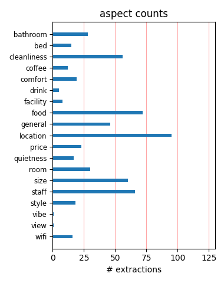
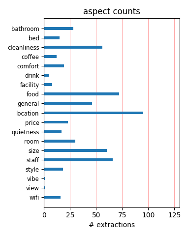

What friendly people. I met the reception staff and the breakfast staff and couldn't have asked for more helpful people. The room was spotlessly clean and the shower was the best. There were no down-sides. only plus-sides. I will most certainly be booking in again.
Hotel is very well located, just few steps from Place Monge. People are very nice and can help you for any information. Rooms are clean and nice according to Paris standards. Prices are more than ok for this hotel. Beds are ok, even if not fantastic. Definitely a good place!
A good value hotel in a good area. The rooms are super tiny and the Internet rarely worked. The bathroom was comfortable other than the shower curtain being too short so water would soak the bathroom floor. Which meant we had to waste our clean towels to sop up the water daily.
My husband and I stayed here for two nights at the end of August and thoroughly enjoyed our stay.The rooms were clean and comfortable and the English speaking reception staff were always helpful and pleasant.With its excellent location, free internet, and the Metro close by we will be back !!
This hotel is in an excellent location. Winthin walking distance to most major sites but still has a neighborhood feel. The staff is very friendly and helpful and the breakfast is a perfect start to the day. The rooms are small the bathrooms are bigger than average. This is my favorite place to stay in Paris.
We recently stayed for 4 nights at St Christophe. We had a twin room facing the street, (which was very quiet), decent sized bathroom, and spotlessly clean. Breakfast was included in the price, and was a good start to the day. The staff were great, and we liked the location. All in all, we very much enjoyed our stay and would stay there again.
This is a charming little hotel in a lovely area of Paris. Nice, spotlessly clean room with comfy bed and lots of storage space. We really enjoyed our stay there. If you like a quiet room I'd suggest a room to the back as the street outside is very noisy at all hours, especially if you have to open windows due to lack of air con. Really liked hotel and would go back!
My friend and I stayed for 4 nights. Loveley and clean. Metro nearby and central to all attractions. Rooms on the small side but had all you need, only nitpick tea and coffee making facilities would be nice. Breakfast was great and all the staff spoke better english than my friend and I speak french. Some lovely cafes nearby too. Would recommend to anyone spending a few days in Paris.
We chose this hotel from the reviews on this site for our easter break. We chose right. The staff were pleasant and helpful. The hotel was cozy and elegant. Our room was bigger than I expected from a Paris hotel. It was clean and nicely furnished. Great location. Close to the Metro and walking distance to fantastic restaurants. Free wi-fi access. Price not too bad for Paris. We plan to stay here again.
We liked the location which is near the botanical gardens. The hotel is slightly out of the tourist mainstream but was only a 15 minute walk to Notre Dame. We stayed in two different rooms and both were small. The breakfast is standard and not worth the $12 price since there are pastry shops nearby and a morning food market at the Place Monge. The staff of this hotel are very friendly and accommodating.
I stayed here for a week in September 2011 with a friend, and we were not disappointed. The hotel is in a great location in the Latin Quarter, near to the Mosque, the Jardin de Plantes, and two wonderful markets. Our room was quiet, facing on to Rue de La Clef, and quite roomy. The staff were friendly and helpful at all times, and I would definitely return - if I'm ever fortunate enough to get to Paris again ...
I booked this hotel based on reviews on trip advisor. There certianly isn't anything wrong with the hotel, it's in a great location, it's clean, breakfast was included in the rate. Rooms are quite small by american standards, but that's to be expected so. Based on all the great reviews I just expexted a little bit of a spark that wasn't there. Everything was just adequate and average, but didn't quite live up hype
We have been to Paris five times and stayed in a different hotel each time. We will stay at the St Christophe again. The location is wonderful, walking distance to Notre Dame and the walking street, Rue Mouffetard. The staff are very friendly and helpful. We were very grateful for their help arranging transportation to the airport during the transportation strike. We highly recommend staying at the Hotel St Christophe
Me, my wife and my daughter stayed in this hotel from may 22 to may 27. The hotel has an excellent location in the Latin quarter, close to the metro, restaurants and places to visit. The staff were very nice to us, always willing to help and accommodate our requests. The room was very small, but it was enough to fit us and the crib that we requested for our 11 month old daughter. I would definitely recommend this hotel!
It took a Paris cab driver nearly 30 minutes to find this hotel after leaving the metro at St Michel. Can't understand why because I pointed her in the right direction and it was my first trip to Paris. It is a delightful hotel, small rooms but adequate. Lovely breakfast served in the basement and helpful on reception. About 15 min walk slightly downhill to Notre Dame but if you need the metro there is one just a few blocks away. A very enjoyable stay.
This is a small, but charming hotel in an excellent location. The rooms are small, but spotlessly clean and the reception staff are very helpful. There are very good restaurants just a short walk away on the Rue Mouffetard, and the two nearby metro stations make it an excellent base.Lack of air conditioning could be a problem in summer months, though there is a fan in the room.Having paid more for worse accommodation, I shall certainly return to this hotel.
The hotel was tucked away on a side street so it was very quiet. It is also located to numerous subway stops. The hotel itself is very small. The elevator was tiny, but it was able to accomodate both of us and our luggage. The room was average size for European standards. The staff was friendly and they spoke English. They willingly gave us directions to attractions and helped us book a shuttle back to CDG. If we make it back to Paris, we would stay here again.
A real parisienne experience. The hotel is a beautiful building and the location perfect. We walked everywhere and the local area is a delight with many bars and FRIENDLY restaurants. We are an older couple and went to Paris to get engaged - it was all perfect and the hotel's ambience added to the experience. Highly recommended if you want a small, local hotel as opposed to a large modern one. Many thanks - we would return and recommend you to friends. Margaret and David
My wife booked this little gem of a hotel for a recent weekend in Paris and would def have to recommend it. It is really central within the Latin Quarter and right beside the Metro, lots of restaurants and bars, and within walking distance of many of the main sites. We arrived at noon and had a great welcome at reception with lots of recommendations. The rooms are Paris size (smallish) - but very comfortable and clean. Again, throughout our stay the staff were very helpful and polite.
We stayed in the Saint Christophe for a week. It was overall a very pleasant location. The location is perfect: very nice neighborhood and the hotel is right on top of a subway station. The rooms were very nice and clean, the bathrooms were exceptionally clean and well equipped. WiFi internet was available at no charge. Breakfast was OK according to French standards but the staff serving it was a bit sloppy sometimes. The price was great for Paris. I would certainly recommend it to anyone.
We just returned from 2 weeks in Paris and stayed at the Hotel Saint Christophe. This is a charming little hotel that is amazingly convenient and walking-distance from so many sites in Paris, such as Notre Dame, the Pantheon, Rue Mouffetard, the Seine, etc. The staff and service were fantastic and very forthcoming with any assistance we required. As for size of the room, you have to go to Paris minus the North American expectations, unless you can afford the Ritz! We would definitely stay at this hotel again! Danny & Dante Toronto, Canada
Hotel staff gave great restaurant recommendations, spoke English very well, always willing to help and answer our questions. Chose the hotel after reading other posts and am glad we did. Very quiet , our room was on the top floor.room was small, but expected this, but was clean, and having a mini fridge in our room stocked with cold drinks was a nice perk too. The hotel staff even helped to make arrangements for us to get back to the airport by shuttle when we checked out. Would definitely recommend staying here, address is 17 rue lacepede, near rue monge.
We stayed in this hotel for four nights in early September, 2006. I agree with the review, two below, "Comfortable....". We love this neighborhood, and the Contrescarpe square just minutes from this hotel. One issue to consider. Paris is noisy at night. Very few 3-star hotels have air conditioning (including this one). If you are there when it is warm at night, you will need the window open and you will hear a good deal of noise from Rue Monge all night. I would stay at this hotel again if in a cool season but would pay more for a hotel with AC if in warm weather.
We spent five nights at the hotel and had a wonderful time in paris. I would agree with most of the reviews- the hotel is small, clean and in a real- not touristy area. I watched the neighbourhood life going on through the windows as I woke up in the morning. I would say that the hotel seemed very warm and I probably would have found it too hot in the summer.It is in an ideal location for the local metro, small cafes etc up at the place de la contrascope where we ate most evenings. The room at the front was noisy but we expected that as we were in a busy capital city.
Stayed 4 nights at hotel and recommend Hotel Saint Christophe to those traveling to Paris who are looking for a reasonable price in a great location. While room for a single person was relatively small, it was comfortable and clean. Staff was very friendly and helpful. Plus hotel stay included a great breakfast each morning...juice, coffee, cereal, yogurt, great croissant and other breads. The hotel, which is 6 floors, does have a lift. Best of all is the location....right in the latin quarter and a block from a metro station (Place Monge). I highly recommend this hotel.
A great place to land after an exhausting schedule. After a quick day in Paris and then travel to Brugge, Belgium and Beaune, Burgandy by train for four days, we stayed here for two nights. The room was large enough for a mature couple and the service was excellent. We appreciated having the internet and two TV channels in English. The bathroom was clean and the shower was large enough to bend over, which we hadn't had at other hotels. The staff spoke English for us and were helpful with directions for internet signup and local travel. I'd recommend this hotel to any traveller.
We stayed eight nights in the St. Christophe. It is located in a lively neighborhood of students, tourists, families, shops and cafes. A short walk takes you to the Place Contrascarpe and Rue Moufetard with their many cafes. It's an easy walk to the Luxembourg gardens and even to the Seine and the Ille de Cite. Our room was small but cozy with a surprisingly large bathroom with full tub and stand up shower. Our room had large french windows that overlooked the street. The elevator is small but was in good order. The staff was professional and helpful. Metro stops are very close.
We stayed there twice this year & were very impressed with the location- just where we wanted to be, central but but quiet. The decor was either right up to date & retro or still left over from the 70s. I suspect the latter. The staff were very helpful, the rooms very clean & comfortable- the lift was minute. Breakfast was good. They seemed to want to lock the front door as early as they could but always opened it promptly. I don't know how family friendly it is but it was ideal for two adults A really good find right in the Latin Quarter, not too cheap/not too pricey...good value.
The hotel manager was so heplful to confirm our shuttle booking to the airport, he did not mind to use his own cell phone and spoke French to clarify the pick up time. The ladies in the breakfast area were very friendly and courteous. The hotel was very closed to a nice ,hanging out place to find a decent dinner for a very good price (3- course meal with delicious desert for about 9 to 15 euros) .Good and central location Free hotel internet in the lobby.We traveled around Europe for 4 weeks ,stayed in several hotels ,from 2 to 4 stars , St. chistophe was the only hotel offered free internet.
Thank you Tripadvisor reviews. We chose this little gem because of Tripadvisor and as per usual it did not disappoint us. We had a wonderful stay at Saint Christophe. All positives were echoed in most of the reviews. A good location,at a great price for Paris that was clean, with a modern bathroom, and helpful, pleasant staff. Easy to get to from CDG. Metro practically outside the door if you want to use it. We walked everywhere...it helped to wear off the croissants and wine! Elevator tiny and we would have liked to keep our key but that was not an issue. Definitely would repeat and recommend!
We stayed for two nights at St Christophe and it is literally 100 metres from the Metro. It is also well located in a very safe area of Paris and there are many inexpensive eateries and bars just a stones throw away from the Hotel. The reception staff were helpful and spoke fluent English which was important for us as we spoke minimal French! The rooms were smallish but i suspect this is standard for Paris. They still had everything that was needed and you can open up the windows into your room so you can look out into the street. We would highly recommend this place due to its perfect location.
Stayed for a weekend in February - the hotel is undergoing some exterior renovation but we experienced NO noise and the windows were not really blocked at all - so dont worry about that unless you stay during the week and plan to spend all day sitting inside your hotel room! Friendly staff, decent breakfast (baguettes, croissants, cereal, yogurts, etc). Down the street from huge park and about 2 blocks from Mouffetard (lots of restaurants/shops/great Sunday marketplace). Less than 3 minute walk from Metro (Place Monge) and there is another metro stop on a different line a little bit further up the street.
This was an excellent hotel for my friend and me for our 5-day visit to Paris. We could walk to all of the centrally-located sites and there was a Metro stop and very nice outdoor market 1 block away. A number of the guests took the breakfast but we preferred the many cafes and boulangeries nearby (all less expensive). I had a TERRIBLE experience with the airport shuttle service. They picked me up on time but proceeded to spend over an hour driving all over Paris picking up other customers. If I hadn't had priority access on my airline, I would have missed my flight. But the hotel itself was a good value.
The first time we stayed in paris, we spent about $50 less per night and got a real substandard hotel... This time we were totally happy with this gem of a boutique hotel in the Latin Quarter. The location is awesome, only 2 streets from Rue Moufettard where all the restaurants are, 5 or 6 blocks from Notre Dame. Staff is like a family here and make suggestions. Rooms can be on the small side, but alllll european hotels have small rooms. We were on the street side, so there was some street noise at night. But it's awesome to have a little balcony in the morning to open the window out and smell the bakery below...
We stayed at this hotel for four nights in September 2008. We found the location to be excellent as it's a very short walk to many dining locations and the Metro. We found the front desk staff to be very friendly and hospitable. The room was small, but it is what we expected for a room in Paris. We found the room to be clean, and that is all we wanted as we only use the room for sleeping! There is just too much to see and do in Paris! We can't comment on the breakfast as we didn't eat at the hotel, but picked up food as we walked around the city. We would definately stay here again, and would recommend this hotel to our friends.
Hotel is in a good location near a metro stop and only a short five/ten minute walk to the water bus. The pantheon is also only a ten minute walk away. Plenty of bars and restaurants close by and not too badly priced Receptionist was very helpful. Rooms were clean and noise was not a problem. Breakfast was a little cramped with not enough tables for the guests however this was the only real downside. Food consisted of the usual offering of croissants and jam although cereals and fruit juice were also available. All in all I would stay here again as the location is good, the rooms comfortable and clean and the price very good for Paris.
We stayed here in August for 8 days. The rooms was very pleasant, clean and tidy. The staff were incredibly friendly, nice and helpful. Breakfast was plentiful-cold cereal, great coffee, yogurt and a wonderful basket of croissants, breads and pastries. The staff allowed us to store our bags there before and after our stay and, best of all, were really friendly and gave excellent information. In addition, we loved the location of the hotel-within walking distance to the main sights of Paris and two blocks from the Rue Mouffetard, full of charming bistros. It's possible to walk to Notre Dame, Pantheon, Jardin de Plantes, Jardin du Luxembourg ...
The hotel was excellent and close to the Metro Station, which allowed easy access throughout Paris and to Versailles. My wife and I spent over a week and the hotel was very comfortable and clean, the towels and hand towels were also fine. There is a 110 volt outlet in the bathroom that can be used for shaving or recharging the digital camera, as well as a built-in hair dryer. There is local nightlife 2 blocks away with many bars and restaurants that are economically priced. We walked to the Arc de Triumph in about three hours, stopping along the way for lunch and sight seeing. The staff also helped with booking shows and dinners. I highly recommend this hotel.
We stayed at St Christophe which is in the Latin Quarter in Paris in March of 2008. It was a wonderful location; right next to the Metro, walking distance to many restaurants and night life, and Notre Dame. The rooms were nice and the elevator was hilarious! I wouldn't suggest paying extra for the breakfasts. You can get more at the pastry shop across the street for less. The bathrooms were very nice and the water pressure was to die for. The rates were a little higher than I’d like but it was well worth it. My favorite was the large tub with the gorgeous window that you could look out of while relaxing in a nice hot bath (which you will need for all of the walking!).
The reviews say that the rooms are on the small size - they are, but if you are in Paris to see Paris then this is a perfect hotel. It is near the zoo/park - worth a walk through one morning. Just down the road is a little morning market and up another small road to the right (just before the hotel) is a small square with lots of bars for an evening drink. Its close to the metro and an easy 12min stroll to Notre Dame. The desk are friendly but I score service low as breakfast is pretty basic (thick black coffee and dry bread) so don't pay - simply get something from one of the many cafe's around. A great place to stay just a short metro/walk from the main tourist traps.
I know Paris hotels well and this one is an excellent choice if you are looking for a step up from a budget hotel but still want something reasonable. The rooms are very comfortable, clean and the bath is exceptionally nice. The mini-fridge comes in handy when you want to buy cheese! The staff is very helpful. Breakfast is as one would expect -- juice, bread, croissants, cereal and yogurt. The location is ideal. The bus stop is around the corner and the metro stop is a block or two away. You can easily walk to Nortre Dame and stroll through the Latin Quarter. Yet, you are in a neighborhood and you can get a glimpse into Paris life. The cheese store is typical and fabulous.
We stayed for 8 nights in room 64, on the sixth floor up under the eaves with a sloping ceiling. Small room, as expected, but lovely and clean. Two big windows opening onto small balconies. Good for catching a nice breeze. Location was great- walking distance to most major attractions and also close to many public transit options. Nice neighbourhood to wander in. We bought breakfast each morning at a bakery across the street and walked to the Jardin des Plantes to eat sitting on a bench under the Cedar of Lebanon tree. Reception was wonderful - fluent in English and always friendly and very helpful. Appreciated the free internet usage for quick emails home. Highly recommended!
We just had 3 nights at the St Christpohe and loved it. This is our 3rd trip to Paris and this hotel and location was the best so far. Very close to place monge metro, market and shops. Walk to saint germaine, pantheon. Staff were really friendly and helpful. The room were ok size for Paris, a little dated but clean and a good bathroom. My only concern was that the rooms were a little hot - they do provide a fan though. When we were there it was nice weather but not all that hot, so I am not sure if we would have enjoyed our stay so much if it had have been over 25 degrees. Apart from that though it is a great hotel and you will struggle to find better value in Paris. We will be back!
Loved our stay at Saint Christophe very comfortable.We arrived earlier so our room was not ready, we stored our luggage and went sightseeing arround .The location is great..Our room was on the 4th floor room 41,the little elevator is cozy,good view of Rue Monge our room was nice and clean.Enjoyed the breakfast room miss my baguette with jam and their coffee is very good.For places to eat lots nearby....Place contrescarpe,Rue Mouffetard and Ile Saint louis....metro stop at place Monge is just around the corner just have to remember lots of stairs at that metro station but it was okay with us....would definitely stay their again....the staff is very helpful...thanks for making our stay enjoyable....
I booked this hotel based on other reviews, so after my experience I thought I should tell people mine. Although a good location and a comfortable room I found the staff quite unfriendly. The most unpleasant thing to happen was that half of my La Prairie eyecream had been used after returning from a day of sight seeing. I don't mean to sound spoilt but I saved up for this cream as a holiday treat and half of it had been scooped out and used - it was extremely obvious. From then on I locked all of my possesions (including toiletries) in my suitcase each morning and whenever I left the room. They do advise the use of the safe but I did not think that meant face products! I will never stay there again.
We read many reviews in this website before deciding on where to stay for our first trip to Paris. We wanted somewhere comfortable and centrally located without having to spend a bomb. Saint Christophe was just that. The lady at the front desk was helpful, friendly and can communicate well in English. The room we had was clean and big enough for the two of us. There were many places to eat around the hotel and the the Metro is just less than 5 mins walk away. For people who are planning to visit in summer, you might want to know that there is no air-condition or fan in the room and it can be quite noisy in the street if you open up the windows. That said, I would still go back to Saint Christophe for its value for money.
My husband and I just returned from a 4 night stay. We had a wonderful experience with the Saint Christophe. After reading so many positive reviews on tripadvisor, we booked this hotel for our first visit to Paris. We were not disappointed. The rooms were clean and the bathrooms were spotless and modern. The staff was lovely and accommodating. Breakfast was included in our rate and was perfect to hold us over until lunch. The location was ideal, as it is near two metro stops and also convenient to access most of Paris' center on foot. Book a room with confidence. We are particularly fussy travelers and have nothing but positive things to say about this hotel. We would gladly stay here again and are confident to recommend it to others.
We stayed here for 5 nights in 2006, on the recommendation of a French friend and previous tripadvisor reviews. On our experience, we would be happy to stay here again. Staff were welcoming and friendly, able to point us towards a local square containing several cafes and restaurants and a vibrant nightlife - it seemed like staying in a small village, rather than a capital city. The inhouse breakfast is plain and basic, but there are plenty of eateries to hand, and the Seine and Notre Dame are within an easy walk. The room was small but very clean and comfortable, with a shuttered bathroom window - one could recline in the bath and feel the city just outside. Romantic, and the whole setting is just right as a stepping point to explore the city.
Thanks to Trip Advisor and those of you who submitted reviews of this lovely hotel. We spent 4 nights at the Saint Christophe 21-25 September 05. Yes, the rooms are fairly small - but aren't they in most European hotels - however, the staff are friendly, the rooms are clean and the location is great. It was nice to be away from the really touristy areas and really enjoy the local Parisian life surrounding the hotel. At the same time we were only a few metres from the closest metro station to take us anywhere around town, and within a 30 minute walk of Notre Dame. Have to say that the little Pastiseries not far from the metro station have treats to die for! Would highly recommend this property and would stay there again next time we're in Paris.
We stayed at the St Christophe recently for a short Paris trip. I checked out the hotel with tripadviser first and the reviews were right. The hotel is in a good position with a metro stop just round the corner. It is situated in the Latin Quarter with lively squares and streets a short walk away. The room itself was a little small but perfectly adequate for our needs. The bathroom was spotless as was the rest of the hotel. Linen was changed regularly even though we were only there for four days. Breakfast was continental and perfectly adequate. It was quiet at night and although a little hot (There was a bit of a heatwave) the hotel provided a fan in the room. The staff were friendly and helped us with booking trips etc. I would certainly stay here again.
My partner and I stayed here for 10 days during Sept/11. We found the hotel to be very clean and quiet. The view was great with flowers in the window boxes on iron balconies which was very Parisienne. The room was a decent size and the bed was comfortable. We had a TV which did offer a couple of English stations and a radio in the room as well. The bathroom was clean with a full tub and shower and it had a window as well. We took the breakfast option which included coffee, juice, croissants and cheese and jellies which was very good. The hotel was in a good area, close to shops, pharmacies, cafes, restaurants, parksand the metro and bus routes.There was even a market which operated 2 days of the week. The hotel staff was very friendly and helpful during our stay.
We stayed at the Hotel Saint Christophe in April 2011 for five nights. We arrived early and our room was not yet ready. The reception staff offered to have the room ready within an hour if we needed to rest before beginning our touring. Our double room was well sized for Paris, clean, and extremely quiet. We were able to walk to all the tourists sights, except Montmarte and the Eiffel Tower. It's close to Rue Mouffetarde, which is packed with restaurants, cafes, and shops. Several metro stations are close; the neighborhood is safe at night. The staff was friendly and helpful. The breakfast is a bit boring but included in the room price and adequate (great coffee). I would recommend this hotel for those who want a well-located, comfortable, budget-friendly hotel in Paris.
we stayed in room 31 and it was more than adequate in fact it was much larger than expected. I suspect however that the room could be unbearable in the summer as there is no airconditioner. the hotel is in a great location with the metro less than 100' away all of the staff were helpful except for the night clerk who was a complete jerk. he was always to busy to answer questions and screwed up our taxi to the airport. not only did the taxi not show up on time, it wasn't a taxi when it did show up. it and ended up costing 65 euro which is more than a regular taxi. worst yet, when we ordered the taxi for 4:45 am so that we would get to CDG by 5:30 am (2 hours before our flight) he didn't tell us that the airport did not open until 6:00 am. we could have slept for 1/2 hour more
The best thing about this hotel is its location but that is not taking anything away from the staff, who are helpful and professional. The downside on this occasion was that the lift was out of order but I was offered another room on the second floor, instead of the sixth floor. The location, as mentioned, is great. It's a stone's throw from the metro, near a lot of great bars and restaurants and Jardin Luxembourg is around the corner. On Sundays there's even a little market where you can stock up on Camembert and French sticks for the journey back home (if you don't mind stinking out the plane/train). The rooms overall are what can be expected from a Parisian hotel in this category; a little too wobbly and wonky for comfort but perfectly agreeable for a couple of nights only.
My wife and i were in paris at the end of March 2010 and i can honestly say we were pleasantly surprised with Saint Christophe. Location and value for money for such a major city was exceptional. The rooms were fairly basic but were of a decent size, so i was very happy with that after i'd just stayed in one of the smallest hotel rooms i had ever seen in London. The staff were very welcoming and were always happy to help you with whatever was needed. The Metro is very close and with the transport system in Paris being so good, and easy to use you can get to all the major tourist sites in no time at all. Absolutely fell in love with the city itself, so i am certain to be heading back sometime in the near future and i have no reason to consider looking for anywhere else to stay.
We stayed at the St. Christophe in September, 2007, and we'd gone to Paris for a honeymoon trip. (We're older newlyweds; my husband had never been to Paris, and it was my first trip in over 30 years.) We liked the hotel very, very much--especially the two large windows in the room and the lovely, clean bathroom-- and we are thinking about booking here again for a trip this coming November. We had gotten a rate that included breakfast, and the servers in the breakfast room were polite and helpful. (The bakery across the street is indeed excellent, and the people there very nice and helpful.) The restaurants immediately surrounding the hotel are a bit touristy, but I think that the people at the desk would make recommendations if asked--and, of course, the hotel is conveniently located.
The St Christophe is located about a 10-minute walk to the French Quarter and across the street from the Place Monge metro station. Our room was on the fourth floor with a view of the lively street below. The room was a decent size with a minibar and a double (not queen) bed, which we found to be a little cramped. The bathroom had a tub with the nicest shower we encountered on our trip. The area is loaded with excellent restaurants, food shops and nearby to a coin laundry which came in very handy! The desk staff was very helpful with helping us with our local transportation needs and restaurant recommendations. The breakfast was a typical Parisian continental with baked goods, cereal, yogurt and cafe au lait. A nice bonus was that the nearby metro was on the line that takes you straight to the Lourvre.
This is a great little hotel just a few blocks from Notre Dame. The rooms are small, as everyone has mentioned, but they are clean and very comfortable. The bed linens are especially nice. The front desk was wonderful, helpful, friendly and their dinner recommendations were very good. The location is really great. You are just two blocks from Place Mufftarde, which has lots of great restaurants and pubs. There are two Metro lines within two blocks and you are only a short walk to the center of the Latin Quarter, the Louvre and Luxenbourg Gardens. The train to the airport is a short walk as well. There are great and affordable restaurants all around this location. This hotel has the largest showers we have found in Europe, a real tub! Nice towels, too. This is super little hotel in Paris. We will definitely return.
My husband and I returned after spending 10 nights at this hotel! The location is great, located just on the tip of the Latin Quarter. The bed was tiny, and I did have a sore back most of the trip from the mattress, which was quite worn. Our room was nice however, very clean and lots of hot water! The location was somewhat noisy, some kind of construction going on now outside the windows but that is not anyone's fault.The coffee was not very good, but across the street they make a great Coffee and the bakery is delicious! My main complaint is regarding an argument about the phone. They stated that there were no charges for using the phone with our AT&T card, yet upon check out they charged us over 80 Euro's! We are seasoned travellers and this has never happened. They refuse to take off the charges so that is a bummer.
The hotel we had previously stayed at in Paris was booked on our dates so we decided to stay in a different area i.e. the left bank. This hotel stood out as the reviews on one of the websites were personally responded to by the management. This meant that they cared about their customers. Hotel was easy to find just round the corner from Place Monge Metro and Jussieu and Cardinal Limone were a short walk away. We were on the 6th floor. We could see the top of the Eiffel Tower from our window. Our room was smallish but clean and had all necessary requirements. We had breakfast included with the booking deal. The breakfast was ideal - cereal, yoghurt, bread and criossants with juice and tea or coffee. The servers were friendly. The hotel is in a quiet part of Paris just off the Rue Monge and we found no problems sleeping.
This was the first hotel I stayed in on my one month trip of Europe and I was pleasantly surprised. While the room was small, it was not an issue for me as I was travelling solo. The room had a bar fridge, and the shower worked well. The room was very clean. Staff were very friendly and helpful in providing information on public transport options and spoke English quite well which was helpful as my French was limited. Breakfast was a little overpriced at 9 euro a day but you got a couple of pastries, yogurt, cereal and a choice of juice or tea or coffee. The location was quiet at night and a supermarket, pharmacy and the local metro station were very close by. Most of the attractions were in walking distance with the Pantheon very nearby. Would definitely recommend this other travellers - it was a great place to stay in Paris.
We stayed here for 3 nights at the end of a 19 day trip to France in September 2007. We wanted somewhere reasonable and central for exploring Paris, but not a modern cookie-cutter hotel room. This hotel was clean, quiet, convenient but still had the old world charm we were looking for, right in the Latin Quarter (arrondissement 5). It's located near Jardin des Plantes, and within easy walking distance to the Panthéon and Notre Dame. It's very near two Métro stops (Place Monge and Cardinal Lemoine). I think the latter was better for suitcases as there were less stairs. Breakfast is served in the basement, nothing fancy but enough to get you going in the morning. If we ever had any questions, the staff were friendly and helpful. Our room overlooked the street, but was quiet and very comfortable. We would definitely stay here again.
I have just returned from a weekend break with 5 friends to the Hotel St Christophe. The area around the hotel is typically Parisian, with lots of shops, restaurants and cafes, with a wonderful market in the Place Monge. Three Metro stations within walking distance. The young lady at reception was extremely helpful - nothing was too much trouble for her, including leaving our luggage in a locked room both on the day of arrival and the day of departure. The bedrooms were quite small, but okay for short stays. Everything was very clean and nicely decorated. The only negative comment would be the small breakfast room. Tables too small for 4 people, and everyone packed in so close that it was difficult to get up and move around without disturbing others. I would certainly recommend the hotel to others, and I hope to return at some future date.
We spent a week at the hotel St. Christophe off rue Monge, and we were happy we picked this hotel, based on TripAdvisor reviews. The price of $125/night included a decent breakfast, cereal, yogurt, croisant, cheese, o.j. and tea or coffee. The mattress was nice and firm, the room completely clean, the shower had terrific water pressure and lots of very hot water. The room faced the street, yet was very quiet. The Metro stop is a half block away and makes it easy to zip around Paris. We walked from the hotel to Notre Dame, the Louvre, Luxembourg Garden and many other places. My husband got sick, and the hotel helped us get a cab to the hospital. I told them they didn't need to chage the linens that day, and they said they would do it while we were gone. They were always very helpful and pleasant. With the money you save on lodging, you can gain weight at the many fantastic restaurants around the city!
My husband and I stayed at this hotel in June for 5 nights and I was disappointed. Very, very small room, but I guess that was to be expected. You open the door and you can touch the bed, but it was clean, as was the bathroom, with adequate closet space. The only electrical outlet was in the bathroom, and I did not like the fact that there was no peephole or a chain on the door. Tiny TV, no air, but a reasonable size fan and you could open the windows, which of course let in all the street noises. I guess because of the size of the room and the fact that my bags were kind of blocking the bed, it was not made up for 2 days. Once I squashed my bags on top of each other, the bed was made. The breakfast was sparse in choices, and after the first day we left it alone. Close to metro, other attractions and dozens of restaurants 2 blocks away, try the Tire-Bouchon restaurant, 47 rue Descartes, fabulous food.
We had traveled in june. We had booked 2 rooms double and twin., (1 couple, 1 teenage daughter and grandmother). . The rooms was sufficent in size, the bed and pillows were very comfortable. A portable fan was provided. Our window remained closed during the night related to the street noise. The room did not have air conditioner. I would not feel comfortable if we had booked it in aug when it would be hot. the bathroom had a tub/shower. The staff was very accommadating and nice.They did speak english very well. They had recommeded resturants in the area, arranged our transportation to the airport. The area is clean and safe. I would recommend it for famiiles. The hotel does have a lift. The hotel was close to the Metro, Plenty of resturants within walking distance to choose from! Breakfast : cold cereal, yoguart, tea/coffee/ orange juice/ plenty of the croissants/breads! We would recommend this hotel for anyone.
Location was not as close to Notre Dame as advertised, but still within a long walk. Some of the staff friendly and helpful. Our room was very small with old furniture, but clean. The bathroom was fine. First night the room was hot and had to sleep with the window open and the street noise was very loud. I asked the hotel staff to book and paid them directly for an airport shuttle for an early morning flight. I was in the lobby waiting for the shuttle and showed the desk clek my receipt. He called the driver in to get our luggage and help us board. To make a long story shorter I had been boarded on the wrong shuttle and therefore missed my flight and other connections. It was very expensive for me to rebook my flights. I called the hotel to see if they would at least refund my 2 nights stay to help offset my expenses. They would not accept responsibility nor would they offer anything other than a very weak apology.
A lot of things have already been said, but I thought this was a great hotel for our first trip to Paris, although I don't have anything to compare it to. The staff was friendly and very nice. I was prepared to be staying in a closet, but I thought the rooms were a good size, I've stayed in smaller rooms in the US. The rooms were also very clean, and clean every day we stayed. The bathroom was small, but probably normal for Paris. Having the mini fridge was very handy. The location was great, being close to the Place Monge metro station. The area is also not very touristy which we enjoyed despite being tourists. We had to give our key to the staff when we left, but we never saw the front office unattended so we felt the keys were safe. The elevator was the smallest one I've ever seen, I'm a fairly big guy and we piled in with one of the cleaning ladies which was a good laugh. I would definitely stay here if we went back.
Just returned from a great few days in this wonderful city.Oct 11-16Great weather,great food,and of course a great little hotel.Catherine and moi spent five nights in the St.Christophe and we fully agree with all the positive comments made here.The hotel itself is spotlessly clean as was our room which was on the 5th floor,with a lovely view over side streets.The staff are friendly and helpful,and really made us feel welcome. A couple of tips to help you on your visit: We arrived from Dublin in CGD at 4 pm.We decided to be adventurous and take the RER to Chatalet then line 7 to Pl. Monge................................a big mistake.Chatalet is a nightmare at rush hour,even moreso with luggage!! Take a taxi its less stressful.About 40mins and 40 euro should see you to your hotel. The 47 Bus is very useful for getting downtown,it drops you back almost at the door of the hotel.Bon Voyage, we will return to the St. Christophe.
I recently traveled to Paris for 1 week for a work conference and searched multiple areas for the "perfect hotel." After a friend's recommendation, I discovered the hidden gem of Hotel Saint Christophe. Located on the left bank in the Latin Quarter, the hotel is within walking distance of Notre Dame, the Siene River, Luxemburg Gardens, and other major sites. Furthermore, the metro (line 7, Place Monge stop) and bus lines are readily accessible. While being ideally located and in close proximity to many places, the hotel was still quiet and personal. Additional perks include a nice, clean updated bathroom, free wireless internet in room and computer in hotel lobby, and very friendly staff. For European standards, the double room was also a decent size. Compared to other hotels in this area, Hotel Saint Christophe is a great value. I would definitely recommend the hotel to other travelers, and I will stay there on my return visits. Merci!
Booked this hotel on the internet having sought location advice from Trip Advisor. When travelling in France we always book Logis De France hotels as these have never disappointed. They are always lovely warm and friendly stopovers. This hotel is small but really comfortable with quite big rooms for Paris and a great en-suite. The staff are really friendly and will make calls for you and arrange trips. The hotel is close to a really exciting daily market and about 10/15 mins. walk of Notre Dame and the right bank. Breakfasts are great with croissants,chocolate croissants, yoghurts, cereal, cheese and crusty bread. Tea, coffee, water and pure orange juice are available along with jams. Be sure to go to Shakespeare and Co book shop on the bank of the Seine, a great experience. My children booked us a treat ride from the airport with ------------ and two lovely men, Vincent and Jimmy made our Paris experience with a night drive through Paris past all the sights. Magic.
I decided to stay at Saint Christophe for my first trip to Paris for 7 nights. The location is super and an easy walk to many sites and cafes. It is walking distance to the highlights of the Latin Quarter but a few blocks away from the college crowd (a good thing). The hotel is 1 block to the metro (line 7) between the North and South exits of the "Place Monge" stop. The rooms on the top floor might be a tad smaller then others but they have a great balcony with room for two to enjoy the sights and sounds of metro Paris. This isn't the quietest hotel I have stayed out but it is a great value. The only reason I didn't rate the hotel a 5 is that the staff while very friendly wasn't able to offer much advice on sights or suggestions. Also, free wifi in the lobby and/or rooms would have been nice but the free use of a computer in the lobby was convenient. There is an internet cafe only a block away if you need to print anything such as boarding passes. I suggest bringing your own soap and shampoo or buying it down the street.
I stayed at this hotel recently for 3 nights and for a boutique hotel in Paris it is defintely one of the nicer ones I have stayed in. The hotel is in a good location (for good restaurants nearby head towards Rue Mouffetard) and the hotel is very clean with lovely furniture and tastefully decorated. While the room is small having stayed in several boutique hotels in Paris I can assure you that this is the case everywhere and I was pleasantly surprised by the size of the bathroom. The big downside for me however was the noise of the metro. I could feel the vibrations of the metro from my room and this definitley affected my ability to sleep (it runs from around 5am until well after midnight so only a 4 hour window in between!). I was on the third floor so it's not like I was close to the basement. As I mentioned previously I have stayed in a lot of hotels in Paris but have never experienced this before and for this reason I won't be returning to this hotel which is such a pity as I thought it was excellent in every other aspect.
Firstly thanks to all of you who take the time to write reviews, I spent a lot of time on the site to pick a hotel within budget but suitable for my fussy younger sister and was very pleased with this recommendation. The biggest highlight for us which probably can not be guaranteed was that our room was ready for us when we arrived at 09:30 after an early early trip on the Eurostar from London. Our room looked into a centre courtyard shared by the other buildings so absolutely no view but very quiet. The room was nothing to shout about but it was nice enough. The bathroom was small but I'd say in its defence it was a really nice bathroom by inexpensive hotel standards well laid out, totally modern, great shower pressure, clean and a nice sized shower. The staff were excellent in helping us located a place to eat - when we got back just before midnight, arranging our trip to Versailles and offered to arrange transport to the airport etc. This hotel is close to the metro and it was super easy to get around Paris. All in all a good experience.
My husband and I just came back home from staying at the Hotel Saint Christophe in the Latin Quarter. We chose this hotel because of its reviews on this website, and we were not disappointed. The location is fantastic - just literally a 2 minute walk from the Place Monge subway, although we preferred to walk down to the Seine, by the Notre Dame, which is just merely about a 20 minute walk on Rue Monge. The staff at the hotel were always extremely friendly, helpful and courteous, the rooms were very clean and the bed very comfortable. We never heard any noises from the room next door, above or below us. Rue Monge is a little noisy, but we kept the front window closed at night, and left the bathroom window opened instead. Rue Mouffetard is just a short walk up from Rue Lecepede, where the hotel is located, and there is a vibrant nightlife there, with tons of restaurants, cafes, bakeries, supermarket, etc. We would most definitely stay at the Hotel Saint Christophe again, and would not hesitate to recomment it to other. Merci beaucoup!!! Au revoir!
My husband and I stayed here to celebrate our wedding anniversary and would definitely recommend it . The hotel was very clean and was just what we expected of a parisian hotel. The rooms were small but this is the norm in Paris. The bathroom was very clean and modern. Lovely to have full length windows that opened fully.All the staff we met were very friendly and the receptionist was very helpful. My husband had asked them to arranged some flowers for me which they had in the room upon our arrival,.They were beautiful and just what my husband had suggested. We had breakfast once and this was fine, all fresh and plenty. We loved the winding staircase. The location is perfect. Metro 1 minute away. Shops just around the corner, including a wonderful bakery. On Sunday we discovered a great little market in the square. Notre Dame is a lovely stroll away, 15 mins, and the park at the end of the road is lovely. It includes gardens and a menagerie. Didnt expect to see red pandas in the middle of Paris! All in all a wonderful trip helped by a great hotel.
We stayed here mid-week from 21 to 25 January 2008 and our experience was superb. The hotel is situated close to Notre Dame, in a good area near to some lovely bars, cafes and restaurants. It is ideally located for exploring Paris on foot, but for the less active it is also close to a number of Metro stations. The hotel staff were faultlessly helpful and friendly. The reception staff spoke excellent English which was perfect given my rusty French. We had a room on the fifth floor which was cosy but very comfortable and warm. Outside street noise was not a problem. Most importantly, the room, bathroom and bed linen were spotlessly clean. However, some travellers may wish to take note that the size of the room and the small lift which serves each of the floors might prove problematic for wheelchairs. The hotel facilities included a small breakfast room where a decent continental breakfast was served, and an internet room. To be honest, we didn't expect or require much more. All in all this hotel was a real charm and I would certainly stay here again.
Arrived exhausted (my problem); sink not working, cleaned up in tub, informed reception (they already knew), trekked off for hours to try to get my phone fixed, came back, napped and woke at 8:00pm. Sink not working!! Went to reception "What do you expect us to do at this time of night?" they said very stroppily. No, we don't have any other rooms. This was the classic Parisian 'not my problem' rudeness that people complain about, but in all my trips to Paris I had never seen before. Incroyable, or whatever. Not even, Madame, I am so sorry. Could you wash in the tub, je suis désolé but there is nothing to be done. When I returned after dinner they did have another room. I suppose I have just got used to better customer service over the years and was utterly shocked at the brush off I got for a real issue. I am the sort who recently put up a very run down hotel in the port in La Cieba, moribund rentals here and there, tiny rooms, bumpy beds...I am not particularly fussy, but if you don't want to make the traveller welcome you should not be in the hotel trade.
Great little hotel in the heart of Paris. The location is very central, near the Plade du Monge metro station. Very handy! The neighbourhood is very quiet for a big city, so getting a good night's sleep was not a problem! Located in the center of the lating quarter you are only about a 10-15 minute walk from the Notre Dame. The rooms are small, but very cosy - definitely big enough for what you need them for: sleep & shower! The only "bad" thing that I have to say is that the beds are a little to short to my liking and my partner's height, but they were otherwise very comfortable! The breakfast is simple & filling, enough to get you started. If you're looking for a bacon-and-eggs style of breakfast you won't find it here. The hotel also offers free Wi-FI, handy if you bring your laptop for some on-site sight/resturant research! We would definitely return to this hotel! The reception staff is very friendly and they also speak English. Note: Place du Monge has an excellent market on weekends - looking forward to explore the local cheeses and breads next time we are here!
This hotel is in a nice, typical Parisian neighbourhood, conveniently close to the Quartier Latin and the St. Germain area, but being just slightly off the main touristic trails it allows you to absorb some of the real life of the city. The cafes and boulangeries on Rue Monge give you plenty of opportunities to eat well, sip your cafe au lait and watch Parisian life happening in front of your eyes. We stayed in a corner room, which is quite roomy by Paris standards. It was clean, light, and comfortable. The staff is very polite and helpful. The free WiFi access is a huge asset. All in all, it definitely merits its high rating on tripadvisor. On the negative side: The double bed is a bit small for two, or at least compared to what i am normally used to. The walls are thin, so we heard the baby in the next room crying from time to time, hence the lower rating for sleep quality. But I guess this is normal in a three star category in Paris. Anyways, despite these slight inconveniences, i would definitely stay there again, and would not hesitate to recommend this place to others.
Although it is listed with 4 stars, it did not give this impression. The location is great, however. Located in the 5th district, it is very close in the Latin Quarter and the area with some very nice restaurants, bars and nightlife. Also, very close to three metro stations and the Gare Austerlitz, where one can get a train to the Varsailles palace. Finally, it is located within 5 minutes of the Botanical garden, which is a hidden gem. The hotel offers breakfast, which was the typical fresh baguettes, croissants and pain de chocolat, with some very nice coffee. A great bakery across the street was a definate complement. If you want to see why French people love their bakeries, line up at the start of the day outside a bakery. The hotel decor and furniture definately needs some major renovation. The room was very small, even by Paris standards, although the bed was comfortable. Sound insulation was not that good, but being so tired at the end of the day, it did not matter much. The free Wifi was a definate plus. To us, the hotel was a nice place to sleep at the end of the day.
This review is long overdue. My wife and i spent 10 nights at the Hotel Saint Christophe and after researching over 100 hotels we decided on this one. Wow did we ever luck out. Located in the Latin Quarter this location couldnt be better. We walked to most sights, @ 10 mins to the Notre Dame and the Metro was 1 block away. The rooms were bigger than i expected, and very clean and quiet. While we were there i just had to stop and check a few of the other hotels on my list, they were'nt even close to being as nice as the Hotel Saint Christophe. Our room included breakfast and it was a great way to start the day. As nice as the rooms and location were, the staff was excellent, always very pleasant and helpful and made out stay better than i ever inagined. when we come back to Paris we will definately stay here again and save myself hours of researching. I have already recommended this hotel to frinds of mine that are planning Paris this year. To the staff there if u remember us, we got you a fresh baguette daily. Thank you very much for a great stay in Paris. Hope to see you again.
Note: This review is actually based on our stay in October 2009. This hotel was really cute and surprised us. The rooms were much bigger then we expected for a European city hotel. We lucked out and got a corner room on the 4th floor with 2 nice big windows. Our room has a good sized, fully equipped, private bathroom. We left our key with the front desk when we went out, which I thought was odd but I guess this is customary? But the desk attendants were friendly and tried to help us although there was the language barrier. We felt very safe here and they locked the front door after a certain time so you get buzzed in by the front desk. We didn't really take advantage of the complimentary breakfast but I don't think it really offered much. We walked A LOT to get to a lot of the main tourist attractions, and we also took full advantage of the city subway system, which had a station a few blocks away. It was very easy to use and navigate! The bakery/cafe across the street was yummy and there was plenty of restaurants and shops to keep you full and busy. Message me for more info about our Paris trip!
After reading the reviews on this site about this hotel, i expected something better. BUT really i cannot fathom WHY anyone would call this a good hotel. 1. The room- Small ( yes i know its europe) and clean BUT there was this MUSTY smell that just seemed to persist. 2. The lack of Airconditioning - This presented and interesting paradox. You could open the rather large windows BUT you let in all the road noises and of course, everyone can see you after your shower. I am not kidding about this. The temprature in the room would soar if the windows were closed. There is a small tower fan in the room that did little. NO cieling fans. 3. Breakfast - Very functional, Orange juice, tea, cornflakes, croissants, yoghurt is what you can expect. Its not the breakfast but WHERE it was served which created the problem. The basement was HOT and small. There were 6 tables in all and at best only 13-15 could fit into it. Not something i want to look forward to in the morning. The GOOD thing was the location- its next to two metros - Place Monge and Cardinal Lemoine. Lots of small bistros nearby BUt its not value for money( in my opinion)
This was going to be a four star review, we loved the hotel, the room was comfortable and clean & the bathroom was good with an excellent shower. There was noise from I think the metro but nothing tragic. The location was good & there were plently of places to eat & drink within a few minutes walk. The downside was that at check in we were encouraged to book a shuttle to the airport & a pick up time was suggested (& accepted) we paid a deposit. We arrived back at the hotel ahead of the agreed time. After waiting for around 30 minutes after the shuttle was due the man on reception phoned the shuttle operators & we were informed that there has been a mistake & there would be a further delay before the shuttle would arrive but the timing could not be guaranteed. On this basis we cancelled the shuttle & used the RER / Metro to get to the airport & we made it with a few minutes to spare. This was poor and the stress this problem caused detracted from what was an enjoyable weekend. To repeat a great hotel, but avoid offers of shuttle airport transfers - I was told this was unsual - but one problem of this nature is one too many...we could have missed our flight!
My wife and I stayed here in early March. Very friendly staff, and the room though small was pleasant and clean. The room included a refrigerator (part with mini-bar items which we ignored) with room for your own snack or lunch supplies. This is a small hotel - about 5 rooms per floor. The elevator is small as well (2 adults and two suitcases filled it) and the elevator is up one step from the lobby. Breakfast was very nice with bread, croissants, cereal, milk, cheese, yoghurt, plus coffee/tea/hot chocolate. The staff was also very helpful in arranging a shuttle to the airport (New Shuttle was the company) for 17 euros each if two people travel together. Check out the wonderful market a block away at Place Monge (7:00 AM-about 2:00) on Weds, Fri, and Sun according to my guide book. Fresh fruit, vegetables, cheese, jams, other foods, and some crafts and jewelry. If you are traveling to or from either airport and have very little luggage you can take the RER B train directly to Luxembourg stop, about 5-6 blocks away. I did not use this station, and don't know if it has an escalator, but most Metro stations we used required using stairs. We would definitely stay at this hotel again.
We had a 4 night stay at the Saint Christophe, and would heartily recommend it to anyone looking for a hotel in Paris. The area is great, not too busy or too touristy (except for Rue Mouffetard a couple of blocks away) with lots of restaurants, shops, bakeries etc. nearby, and very close to 2 metro stations. Though Place Monge station does have a lot of stairs - we managed with our 2 large suitcases, baby and pram, but was a bit of a workout, so best be prepared for this! We were pleasantly surprised with the size of our room on the third fllow - even with a cot for our 6 month old baby, we still had ample room. Free wifi was great, as was the generous breakfast in the morning, with lovely pastries and lots of coffee! The ladies who served breakfast were very friendly, and were very kind to our baby. Reception staff were also very helpful, and always had a smile for us. They spoke English perfectly as mentioned by other reviewers. A few other touches were appreciated - extra rubbish bags were provided in our room for the baby, as well as extra towels and amenities. THe hotel was definitely one of our favourites during the holiday - we felt very at home, and welcomed. Hoping to travel back one day!
My three girlfriends and myself stayed at the Hotel St. Christophe in the February half-term and really enjoyed our stay. The hotel staff were very helpful and friendly. They advised us were to find lovely restaurants and we were not disappointed. The hotel rooms were very clean and comfortable and the breakfast was continental and although not a great choice was enough to set you up for the morning. The location was excellent and only ten minutes walk to Notre Dame were we boarded the Red tour bus which I pre-booked through discount website and paid £20.00 each for the two days. I also pre-booked the Eiffel Tower and although we did have to wait it was not as long as the people who had not pre-booked. We visited the Musee d'Orsay and did have to wait about an hour to get in so I would advise if you know you are going to visit the museum pre-book! Being only four women we felt very safe around the hotel area and the restaurants we visited were about five minutes walk. The only negative that I could find with the hotel was that they did not have a safe in the room but they did have a system in place to look after any passports or valuables. I would highly recommend the hotel and if I visit Paris again would have no hessitation in booking this hotel.
There are good and weak points concerning the St Christophe. It is very reasonable for a 3 star hotel ( we paid about £340 for 3 nights in a double room B and B .)The location is excellent, right next to the Metro Place Monge and just a short trip into Paris.The area is full of restaurants and bars. Service was excellent and friendly with english spoken. The bathroom was clean and the shower excellent.You are also able to use the computer in the Reception area for free.The rooms are small and dark however and we did not have bedside lights. It was December but the room was always warm. There is only one english channel on the TV. Breakfast was adequate for 8 eu each but the breakfast room was small although welcoming. It might be a problem if the hotel was full. There is not much choice apart from 2 types of cereals, pain, croissants, yoghurt etc. The one major thing that concerned me is that there is just one central staircase plus a lift and if there was a fire and this was inaccessible , you would be in danger. There are no other fire exits. You would have to wait at the window for the fire brigade! Presumably the authorities have cleared it for safety? In the area, the best bistro we went to is L'Estrapade up near the Pantheon. This place was superb.
This hotel is essentially average. Given the multitude of choices in Paris, it's hard to go out and recommend it, but on the other hand there are a lot of worse places out there. The big plus is the location, which is essentially next to a Metro stop, as well as close to many shops/restaurants. The proximity to the university helps there. Also, the staff is quite friendly and helpful. There is also a computer, albeit a very slow one, with complimentary internet. Once you get used to the non-QWERTY European keyboard, it can come in handy. On the negative side of things, the cleanliness of the rooms isn't exactly top-notch. Not unusual for trash cans to not be cleaned, carpets to not be vacuumed, etc. Never mind personal items being strangely moved at times. Plus, the rooms can have a musty smell. Also, the rooms are very small (Tokyo small) but maybe not that unusual for Paris. And the lack of free wifi internet is becoming more of an issue now that so many hotels include it in their rate. As a side note, the breakfast should be avoided simply b/c it's not worth the cost. You can go to one of the many bakeries in the area and get much more for less than half the price. Overall, I don't think I'd necessarily stay again, but if you perhaps get a great deal, then it might be worth trying this hotel out...
My moter in-law booked our rooms online without a problem. She noted that we were arriving late. Staff had no problems with our delayed arrival. The cab ride from CDG for the four of us was reasonable. Staff was incredibly nice. Tolerant of my French, but fluent in English too. Our room was on the top floor. My in-laws' room was on the fifth floor. Our bathroom was beautiful. it did not have a bathtub, but was beautifully appointed and quite large. The coffered and lower ceilings of our room made it feel a touch small for the two of us. With that said though, my in-laws room on the lower floor felt roomier and the bathtub made for an even nicer room. I would recommend a fourth or fifth floor room. Not a sixth floor room. The bedding needs to be replaced and updated as it was lackluster. The bed itself and the pillows were good though. We slept with the windows openand were quite comfortable in late September. It got noisy at various points in the evening, but that is to be expected in Paris. It didn't prevent me from sleeping. Breakfast was served in the basement and it was quite warm down there. Breakfast was functonal. Although we would stay there again, we would give a more enthusiastic review if bedding were updated and rooms were better aired out as we found all the other aspects to be agreeable.
We stayed in this hotel tow years ago- loved it and recommended to our friends. This time- it was alittle bit disappointing. The room was tiny and smelly . We have no problem with litlle rooms, and even prefer the intimate feeling. But it was really too litlle! In addition, we asked, in advance, if there is a possibility, to make an early check in- we mentioned that i am pregnant in an advanced stage, and that our flight arrives early. We were answed that there will be no problem unless all the rooms will be occupied- an answer we found reasonably fair. Though, with our arrival we were told that there is no possibility to an early check in, since the hotel is full. Nonetheless, checking the hotel website, in the day of our arrival- there were 5 (!!!) double available rooms. It is true that no one owed us a thing- It is just the feeling that no gesture of good will was done. And it was the main problem during all our stay- the service was basic, and it seemed that no-one tries to halp wholeheartedly. That was the common attitude in the front desk and with the morning breakfest staff- who never smiled but looked very eager to ask the room number- giving an unpleasent feeling. So... the hotel still has its great location, reasonable price and basic but clean rooms, but there seems to be comparable possibilitis with batter attitude to the gustes.
On short notice we decided to take a trip to Paris over Thanksgiving. I was looking for a place on the right bank, but Hotel Saint Christophe had the right price. Our local travel agent helped book our stay. I had been warned that some 3-star hotels are not what they seem or what we would expect. From the moment of our arrival, we knew we had booked a great hotel. We arrived just after the beginning of the train strikes. The front desk staff was wonderful in giving directions, checking our train schedule (for traveling to the Loire Valley later in the week), and helping to arrange a tour to Versailles (since the trains weren't running). I have never seen such attentive staff! The rooms were clean--mine was on the 6th floor, had a balcony, and contrary to other reviews, the room and bathroom were of good size. My sister's was on the first floor, had 2 twin beds (kind of narrow), and had an even bigger room and bathroom. BOTH rooms were quiet and comfortable. Breakfast was simple, filling, and the staff were nice--coffee, croissants, rolls, cheese, yogurt, cereal, butter, and jam. The local flea market was great! Meats, cheeses, clothes, and treats! Hotel Saint Christophe is fairly centrally located--only 15 min walk to Notre Dame, 15 min walk to Gare Austerlitz, and many shops within a 10 min walking radius. We had a wonderful stay--we will return. Thanks!
We stayed for four nights at the Hotel Saint Christophe at the end of September. Very close to Place Monge with its thrice weekly market and metro stop, the Saint Christophe is decidedly convenient for the Latin Quarter and central Paris. Our room was located in the front of the hotel, and with the windows open, the street noise was almost unbearable. However, with the windows closed (not an option all times of year), it was relatively quiet. The bed was extremely small, though, making it difficult for two normal sized adults to sleep comfortably. There is some storage space, but the configuration made it difficult to access. The bathroom was clean and functional, but limited space made it challenging to access toiletries for two people. Shower gel and shampoo were provided in tiny tear packages, which we found insufficient for lathering up; bring your own. The breakfast room downstairs is mundane compared to many hotels of this sort, and the breakfast (included in our rate) even more so. While we're used to small continental breakfasts, good bread or croissants make them enjoyable. The service was generally gracious and inviting. We had one small problem with housekeeping leaving only one bath towel, met with the classic French "Impossible!" when we informed the front desk, but then rapidly resolved. All in all, we found this a solid property but nothing special.
Let me start with the no so good stuff. We stayed at the St Christophe for 3 nights from the World Cup final date onward. The weather was hot (30 degrees plus) and humid. We were given a room facing the street that was hot and, once Spanish celebrations started, very noisy. We asked if other rooms were available and the hotel staff, very obligingly, moved us to an interior room on the 5th floor. End of noise. Heat, however, remained an issue. (The hotel is not air conditioned). We slept with a fan running and windows open (into an interior well between buildings.) It was still a little uncomfortable. Now for the good stuff. This is an EXCELLENTLY run hotel with lovely staff in a very convenient location, close to the botanic garden, the Metro and a moderate walk (about a flat 1km) to the Latin Quarter. The staff (esp the lovely Adelaide) met our every request pleasantly and efficiently. We're sure that, in more moderate temperatures the hotel would have been very comfortable. Breakfast was a slightly above average continental. If the hotel were to improve anything, it might be to add fruit and a wider range of pastries in this area. Rooms are a good size, beds are comfortable (remember - we experienced 2 rooms) and bathrooms are clean, a reasonable size and have good hot water pressure. When we visit Paris again (hopefully), we'll happily book the St Christophe again.
I am a seasoned traveller and was lucky enough to have 2 weekends in a row in Paris recently. The first time I stayed with a friend in the Hotel Acte V around the corner from this one. It was great 3 star, modern refurb, friendly staff, great bar and lounge area, large well furnished rooms, aircdon, flat screen tv, little balconies, quiet, great location. For the second trip which was a romantic weekend away with my husband sans enfant I choose the 'sainte christophe' *because it was 150 points higher* than the Acte V on Trip advisor. What a *terrible* mistake. We couldn't believe it when we arrived to the drab, dated, run down place with no aircon and hot still little rooms (so hot other guests on the same floor were lying on their beds in the heat with the doors open for all to see!) This place is a 1 star compared to the Acte V and just shows how the good Trip Advisor system can be distorted wrongly and good hotels (and ultimately travellers pay). I have learnt from this run a mile from a hotel that appears on 'trip advisor' where every guest comment is followed by a management one thanking them as it shows the hotel doesn't have time to clean rooms properly (our room had a pile of old towels on the floor when we got there) or refurb. I know you can do much better for the money than the Sainte Christophe. They wouldn't let us cancel our booking for the first night but we stayed at the Acte V the second for sure thankfully.
Good quality, mid-range Parisien hotels have always eluded us.....until now. The Saint Christophe is a little gem, and we will definitely use it when we return to Paris again. The staff were helpful and courteous; the room was exceptional (for a Parisien hotel!), in that its decor was unobtrusive, it was clean, all the plumbing worked, it was medium-sized but with sufficient storage areas for two people for 4 nights and the bed was very comfortable; the lift was fine (I don't understand why some people in their reviews of this hotel make a fuss about the size of the lift!) ; and breakfast was sufficient - very french, and with the choice of cheese and yoghurt as well the usual juice, tea/coffee/chocolate, croissant, rolls and jam, it could just do with the addition of a bowl of fresh fruit for customers to pick at. The reception area helpfully carries daily newspapers, a daily weather report and a pc terminal, and is a pleasant, light area in which to sit too. Situation-wise, the hotel is excellent, just a few minutes walk from the metro monge. The Jardin des Plantes is 5 minutes walk one way, and the student/market area starting at Place Contrescarpe is 5 minutes the other way. Here you can get practically any type of food you could wish for - vegetarian, italien, spanish, algerian, asian, turkish, greek, moroccan, etc etc. You can also get right to the heart of many parisien sights within 20-30 minutes walk eg. notre dame, boulevard st michel, cluny museum etc. The hotel will store your luggage for free, once you've checked out. In all, a really great hotel, well worth the money.
We just returned from a week at the Saint Christophe, and we enjoyed it tremendously. The rooms are cosy and very well maintained. I saw some negative comments in some earlier reviews about the beds, but we throught they were excellent; I am 6' 3" and was very comfortable in one of the twin beds. The bathrooms are very modern and are excellent as well; ours had a "razor point" where you can plug in a US-110 volt electric device without the need for a converter. I also saw some earlier negative comments about street noise. At least during this time of year, when we slept with the windows closed, we heard nothing. We really enjoyed the breakfasts. There is plenty served, and the convenience of having the breakfast in the hotel is terrific. We didn't make many requests of the staff, but whenever we did they were extremely pleasant and responsive. It's true, as recently noted here, that the Place Monge metro station is closed for repairs. Don't be put off by that -- the Jussieu station is only a few minutes' walk away. We loved the location. It is especially nice to be so close (two blocks) to the Jardin des Plantes. My son wanted to run every morning before breakfast, and this was an ideal place for that. For us non-runners, it was a beautiful spot for a walk among the gardens and the menagerie. The hotel is also an easy walk to the Gare d'Austerlitz, which was our departure point for a day trip to Versailles. There are a wide variety of good restaurants only two blocks away on Rue Mouffetard, and this is only a 10-15 minute walk from Notre Dame. All in all, it was a delightful hotel at a good price. I would definitely stay there again.
Let me start by saying that this hotel is in a good location (Latin Quarter) and the rooms are clean and adequate. The reason I am giving them a low rating is b/c of their bizarre and unsafe key policy. They want you to leave your room key with them everytime you step out of the hotel. And when I say leave your key with them, I do not mean behind some secure counter where only the hotel staff have access. There is an open cabinet with hooks next to (not behind) the reception desk within easy access of anybody who walks into the lobby. In fact when we first showed up there was nobody in the lobby for at least 5 minutes, plenty of time for somebody to stroll in, grab a key (b/c they know whatever key they pick, that room will be empty) and take whatever they want. For the first couple of nights we just kept the key and waked quickly out of the lobby before any staff could say anything. However on our last night in Paris as we were walking out to get some dessert the guy manning the desk (actually he was on the lobby computer which is supposed to be for guests instead of behind the reception desk) asked for our key. When we explained we didn't feel safe leaving the key he became heated and said it was hotel policy and although his english wasn't good we thought he said he would call the police on us if we didn't hand over our key. We started to fear he would lock us out if we stepped out so we had the pleasure of spending our last night in Paris trapped in our room. If you don't mind handing over security of your items to some hired help who was hogging the guest's computer (by the way they charge for wifi which is really nickel and diming guests) by all means stay here.
We have just returned from the St Christophe and a long weekend in Paris with our 3 children and partners to celebrate my 60th birthday. The hotel is very well situated for the metro (Monge) and for eating out on rue Mouffetard. As we were arriving on different days, I found that I could not book on any website - or I could, but would not have been certain of getting us all in - so I booked directly with the hotel. They were not willing to offer me the same deals available on websites (inclusive breakfast.. or even a free night) but the price was a not unreasonable 110euros per 'double' room. The "children's" rooms were all quite adequate; fairly small but clean and quite comfortable. Ours (24), unfortunately, was incredibly tiny and cramped with barely room to walk round the small double bed, the top of which was hemmed in by the only storage 'cupboards', so if you turned over too energetically in the middle of the night you crashed your elbow against them! The worst part was having next door's bathroom - and the lift shaft - in our room, hence the severe lack of space. So, do ensure that you specify that you do NOT want a room ending in 4! These rooms are certainly not of an appropriate size for 2 people - and would only suit someone a little on the deaf side! The reception staff were charming and helpful in every respect. They did try to see if an alternate room was available for us, but informed us that there wasn't one. I cannot comment on breakfast as we never managed to eat there - the breakfasting area was tiny and full the first morning, so we ate at a bar further up rue Monge on the left (les petits écoliers?) for 4e90. there is also an excellent boulangerie opposite and a good supermarket, Ed, on the other side of rue Lacépède heading for rue Mouffetard. [--] AMF